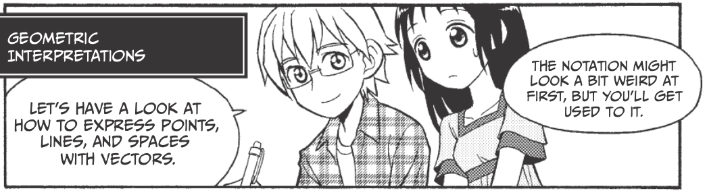

14) Vectors and Linear Transformations¶
Related references:
Vectors¶
Overview¶
 This and other comics from The Manga Guide to Linear Algebra
Vectors
Vectors

Vectors
Vectors
Linear Dependence and Bases¶

Vectors
Find the constants \(c_1, c_2, c_3\), and \(c_4\) that satisfy the equation:
Vectors

Vectors
Vectors

Vectors

Vectors

Vectors
Vectors
Dimension¶
Vectors
What is a subspace?¶
Let \(c\) be an arbitrary real number and \(W\) be a nonempty subset of \(R^m\) satisfying these two conditions:
An element in \(W\) multiplied by \(c\) is still an element in \(W\). (Closed under scalar multiplication.)
If $:raw-latex:left`( \begin{array}{c} a_{1i} \ a_{2i} \ :raw-latex:vdots \ a_{mi} \end{array} :raw-latex:right`) :raw-latex:`\in `W $, then $c :raw-latex:`left`( \begin{array}{c} a_{1i} \ a_{2i} \ :raw-latex:`\vdots `\\ a_{mi} \\end{array} :raw-latex:`right`) :raw-latex:`in `W $
The sum of two arbitrary elements in W is still an element in W. (Closed under addition.)
If $:raw-latex:left`( \begin{array}{c} a_{1i} \ a_{2i} \ :raw-latex:vdots \ a_{mi} \end{array} :raw-latex:right`) :raw-latex:`\in `W $ and $:raw-latex:`left`( \begin{array}{c} a_{1j} \ a_{2j} \ :raw-latex:`\vdots `\\ a_{mj} \\end{array} :raw-latex:`right`) :raw-latex:`\in `W $, then $ :raw-latex:`left`( \begin{array}{c} a_{1i} \ a_{2i} \ :raw-latex:`\vdots `\\ a_{mi} \\end{array} :raw-latex:`right`) + :raw-latex:`\left`( \\begin{array}{c} a_{1j} \\ a_{2j} \\ :raw-latex:`vdots \ a_{mj} \end{array} :raw-latex:right`) :raw-latex:`in `W $
If both of these conditions hold, then \(W\) is a subspace of \(R^m\).

Vectors
Another, more concrete way to look at one-dimensional subspaces is as lines through the origin. Two-dimensional subspaces are similarly planes through the origin. Other subspaces can also be visualized, but not as easily.

Vectors

Vectors
Vectors
Linear Transformations¶
Vectors
Vectors

Vectors

Vectors

Vectors

Vectors
Vectors
Vectors
Vectors
Vectors
Vectors

Vectors
Vectors
Image¶
The image of \(f\) (written Im \(f\)) is equal to the set of vectors that is made up of all of the possible output values of f, as you can see in the following relation:

Vectors
Rank¶
The number of linearly independent vectors among the columns of the matrix \(M\) (which is also the dimension of the \(R^m\) subspace Im \(f\)) is called the rank of \(M\), and it is written: rank \(M\).
What is the rank of $ :raw-latex:`left`(
In [1]:
import numpy as np
a = np.array([[3, 1], [1, 2]])
np.linalg.matrix_rank(a)
Out[1]:
2
Of $ :raw-latex:`left`(
In [2]:
b = np.array([[3, 6], [1, 2]])
np.linalg.matrix_rank(b)
Out[2]:
1

Vectors

Vectors
Back to the cautions about matrix multiplication:¶
Recall that:
- $:raw-latex:mathbf{AC} = :raw-latex:`\mathbf{AD}` $ does not necessarily imply that $:raw-latex:mathbf{C} = :raw-latex:`\mathbf{D}` $, even when $:raw-latex:mathbf{A} :raw-latex:`neq `0 $
- $:raw-latex:mathbf{AB} = 0 $ does not necessarily imply that $:raw-latex:mathbf{A} = 0 $ or $:raw-latex:mathbf{B} = 0 $ or $:raw-latex:mathbf{BA} = 0 $
We can be specific about when implications are true using the concept of rank.
Let A, B, C be \(n \times n\) matrices. Then:
- If rank A \(= n\) and AB = AC, then B = C.
- If rank A \(= n\), then AB = 0 implies B = 0.
- If AB = 0 but A $:raw-latex:neq `$ **0** and **B** $:raw-latex:neq `$ 0, then rank A $ < n $ and rank B $ < n $.
- If A is singular, so are AB and BA.
Solutions of Linear Equations¶
Fundamental theorem for linear systems¶
- Existence. A linear system of \(m\) equations and \(n\) unknowns \(x_1, \cdots, x_n\):
has solutions if and only if the coefficient matrix A and the augmented matrix \(\mathbf{\tilde{A}}\):
- Uniqueness. The system has precisely one solution if and only if the common rank \(r\) of A and \(\mathbf{\tilde{A}}\) equals \(n\).
- Infinitely many solutions. If the common rank \(r < n\), the system has infinitely many solutions (underspecified). All of these are obtained by determining \(r\) suitable unknowns (whose submatrix of coefficients must have rank \(r\)) in terms of the remaining \(n-r\) unknowns, to which arbitrary values can be assigned.
- Gaussian elimination. If solutions exist, they can all be obtained by Gaussian elimination. It may be started without first determining ranks, as it will automatically reveal if solutions exist or not.
Example:¶
Solve the linear system of equations:
In [3]:
a = np.array([[3, 1], [1, 2]])
b = np.array([[9], [8]])
a_aug = np.hstack([a, b])
print(a_aug)
[[3 1 9]
[1 2 8]]
In [4]:
print(np.linalg.matrix_rank(a))
print(np.linalg.matrix_rank(a_aug))
2
2
In [5]:
x = np.linalg.solve(a, b)
print(x)
[[ 2.]
[ 3.]]
In [6]:
# Check solution
np.allclose(np.dot(a, x), b)
Out[6]:
True
The homogeneous linear system¶
The linear system of \(m\) equations and \(n\) unknowns \(x_1, \cdots, x_n\) is called homogeneous if all the \(b_j\)’s on the right side equal zero. Otherwise, the system is called nonhomogeneous.
The homogenous linear system:
always has the trivial solution \(x_j = 0\). Nontrivial solutions exist if and only if rank A < n. If rank A < n, these solutions, together with x = 0 form the solution space of the system of equations.
If x\(_1\) and x\(_2\) are both solution vectors of a homogenous system of equations, then x = \(c_1\)x\(_1\) + \(c_2\)x\(_2\) is a solution vector of the system of equations (this does not hold for nonhomogenous systems).
Homogeneous equations with fewer equations than unknowns always has nontrivial solutions.
The nonhomogeneous linear system¶
If a nonhomogeneous linear system of equations has solutions, then all these solutions are of the form:
where \(\mathbf{x}_0\) is any solution of the nonhomogenous system of equations, and \(\mathbf{x}_h\) runs through all the solutions of the corresponding homogeneous system.
Cramer’s Theorem¶
If a linear system of \(n\) equations and the same number of unknowns \(x_1, \cdots, x_n\), has a nonzero coefficient determinant D = det A, then the system has precisely one solution.
If the system is homogeneous and D \(\neq\) 0, it has only the trivial solution x = 0. If D = 0, the homogeneous system also has nontrivial solutions.
Next up: Eigenvectors and eigenvalues!